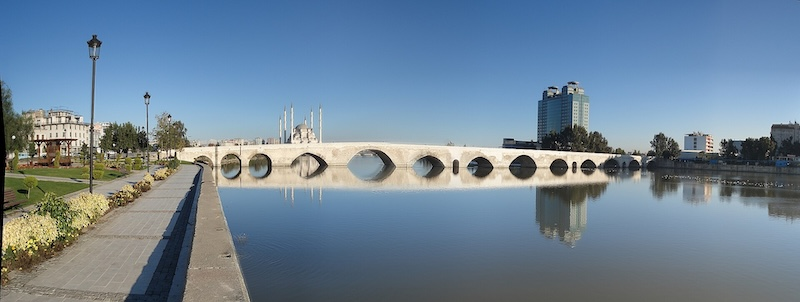
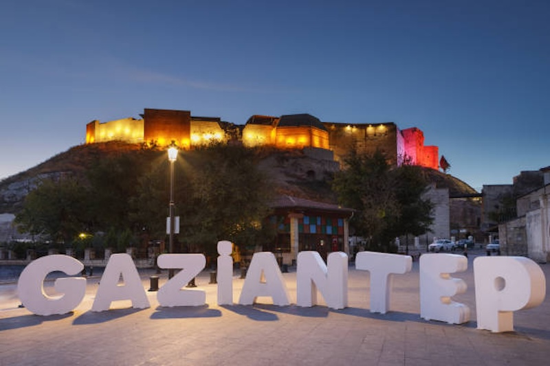
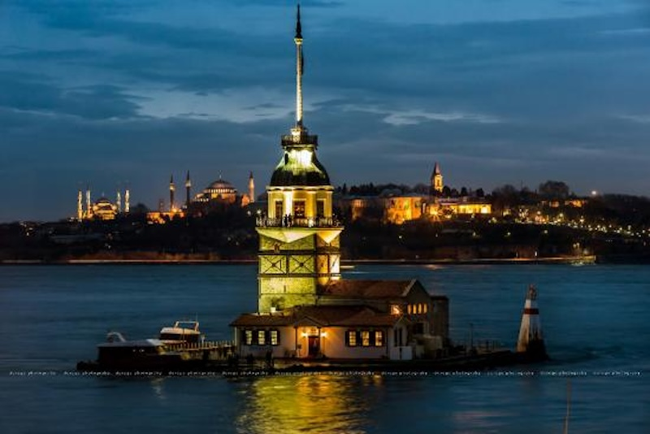
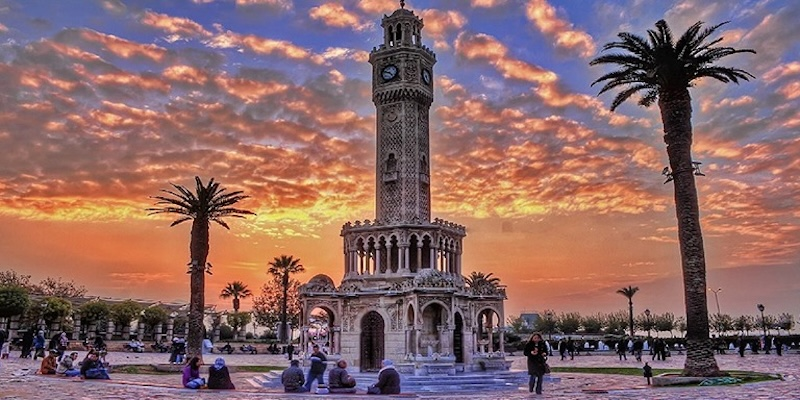

Restoranlar
Şehrin en iyi restoranlarını keşfediyor, deneyimlerimizi sizlerle paylaşıyoruz.
Biz Eray ve Mevsim. Türkiye'nin dört bir yanında restoranları, kafeleri, sokak lezzetlerini ve dünya mutfağını keşfediyor, gerçek deneyimlerimizi samimi bir dille sizlerle paylaşıyoruz.

Restoran
Şehir
Lezzet
Takipçi Hedefi

Bir Lokma Daha, sadece yemek tanıtımı yapan bir sayfa değildir. Biz Eray ve Mevsim olarak Türkiye'nin dört bir yanındaki restoranları, kafeleri ve yöresel lezzetleri ziyaret ederek gerçek deneyimlerimizi sizlerle paylaşıyoruz.
Reklamdan çok güvene önem veriyoruz. Gittiğimiz her mekânda hizmeti, ortamı, fiyat-performansı ve lezzeti objektif şekilde değerlendiriyoruz.
Şehrin en iyi restoranlarını keşfediyor, deneyimlerimizi sizlerle paylaşıyoruz.
Özgün kahvecilerden butik kafelere kadar yeni mekânları ziyaret ediyoruz.
Farklı ülkelerin mutfaklarını deneyimleyerek lezzetleri karşılaştırıyoruz.
Türkiye'nin unutulmaya yüz tutmuş eşsiz yöresel tatlarını keşfediyoruz.




Her hafta yeni restoranlar, kafeler ve eşsiz lezzetler keşfediyoruz.
@birlokmadaha01